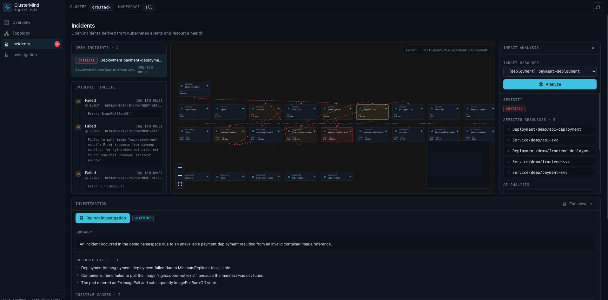
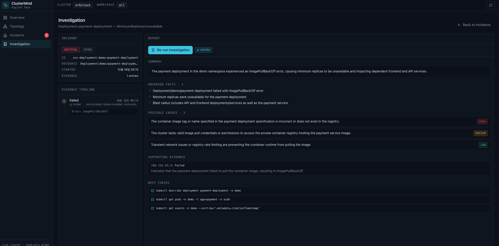
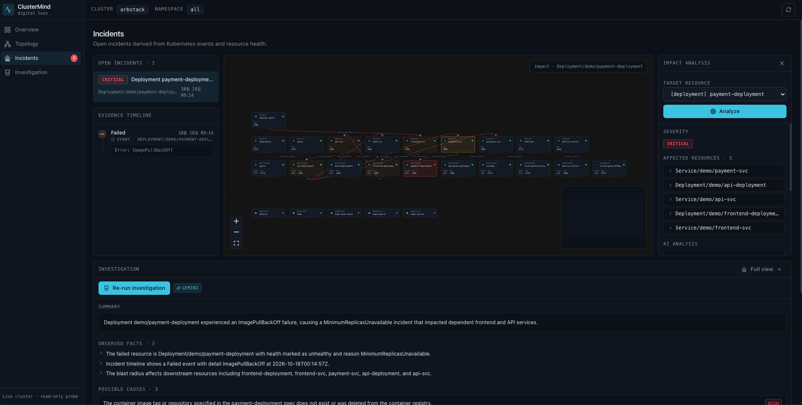
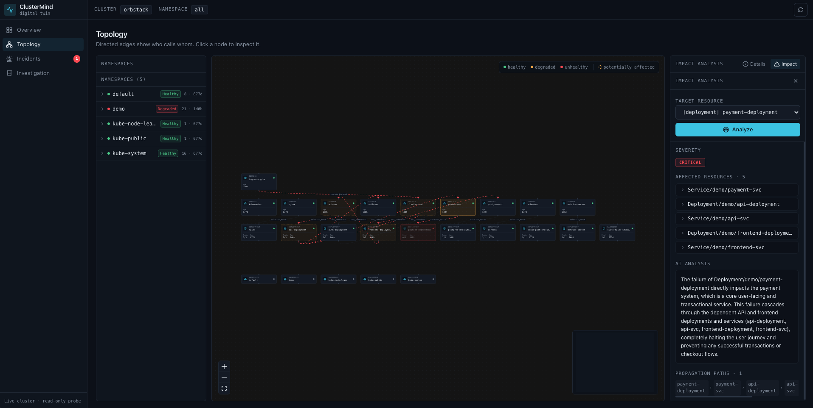

실시간으로 클러스터 리소스를 수집해 구조도, 의존성 그래프, 장애 영향 범위를 자동 생성합니다. 특정 서비스가 장애가 났을 때 어디까지 전파되는지 BFS 그래프 탐색과 Gemini 추론으로 즉시 시각화합니다.
ClusterMind collects cluster resources in real time and automatically generates topology maps, dependency graphs, and failure blast radii. When a service fails, BFS graph traversal and Gemini reasoning instantly visualize how far the impact propagates.
클러스터에 아무것도 쓰지 않습니다. 모든 작업은 엄격한 read-only이며, Secret 값은 수집 즉시 폐기됩니다.
ClusterMind never writes to the cluster. Everything is strictly read-only, and Secret values are discarded the moment they are collected.
client-go로 Pod · Service · Deployment · Ingress · HPA · NetworkPolicy · ConfigMap를 수집합니다. Secret.Data는 수집 즉시 nil로 폐기되어 응답·로그에 절대 노출되지 않습니다.
Collects Pods · Services · Deployments · Ingresses · HPAs · NetworkPolicies · ConfigMaps via client-go. Secret.Data is discarded as nil immediately, so it never appears in responses or logs.
Label Selector · Ingress backend · HPA 타겟 · ConfigMap 마운트 · Env URL 참조를 매칭해 edge를 추론하고, 각 edge에 confidence(0~1)를 부여합니다. 0.3 미만은 기본 제외.
Infers edges by matching Label Selectors · Ingress backends · HPA targets · ConfigMap mounts · Env URL references, scoring each edge with confidence (0–1). Edges below 0.3 are excluded by default.
BFS 그래프 탐색(깊이 ≤ 5) 결과를 Gemini에 전달해 전파 경로·비즈니스 영향·심각도(critical/high/medium/low)를 추론합니다. LLM 미사용 시 결정적 fallback.
BFS graph traversal (depth ≤ 5) results are fed to Gemini to reason about propagation paths, business impact, and severity (critical/high/medium/low). Deterministic fallback when the LLM is unavailable.
드래그 · 줌 · 미니맵을 지원하는 실시간 캔버스. 장애 원점은 빨간 펄스, 직접 영향은 주황, 간접 영향은 노란 점선으로 색상 인코딩됩니다.
A real-time canvas with drag, zoom, and minimap. Failure origins pulse red, direct impacts turn orange, and indirect impacts get yellow dashed outlines.
K8s Events와 리소스 health에서 인시던트를 자동 파생하고, 타임라인 근거와 함께 Gemini 기반 루트케이스 조사 리포트(summary · 원인 · 다음 점검)를 생성합니다.
Automatically derives incidents from K8s events and resource health, and generates Gemini-powered root-cause investigation reports (summary · causes · next checks) backed by timeline evidence.
네임스페이스별 Healthy / Degraded / Warning 상태 요약과 리소스별 ready 비율·사유를 제공합니다. 노드 클릭 시 상·하류 의존성 패널과 원클릭 영향 분석.
Per-namespace Healthy / Degraded / Warning rollups with per-resource ready ratios and reasons. Click a node for upstream/downstream dependencies and one-click impact analysis.
POST /api/v1/impact — Service/demo/payment-svc 장애 시
BFS 탐색 + Gemini 추론 결과가 컬러 하이라이트로 렌더링됩니다.
POST /api/v1/impact — When Service/demo/payment-svc fails,
BFS traversal + Gemini reasoning results are rendered with color highlights.
AI 생성 설명 예시 — “payment-svc 장애 시 checkout-deployment의 결제 API 호출이 실패해 주문 완료가 불가능해집니다. 이로 인해 order-svc의 주문 상태 업데이트와 notification-svc의 결제 완료 알림이 연쇄 중단됩니다.” · severity: CRITICAL
Sample AI-generated explanation — “When payment-svc fails, checkout-deployment's payment API calls fail, making order completion impossible. As a result, order-svc's order status updates and notification-svc's payment confirmation alerts are cascaded into failure.” · severity: CRITICAL
Topology · Incidents · Investigation 뷰 — 이 페이지와 동일한 다크 테마로 동작합니다.
Topology · Incidents · Investigation views — running in the same dark theme as this page.




React 프론트엔드를 Go 바이너리에 go:embed로 내장해
API와 UI를 하나의 distroless 컨테이너로 서빙합니다. Cloud Run은 이 컨테이너 하나만 띄우면 됩니다.
The React frontend is embedded into the Go binary via go:embed, so the
API and UI are served from one distroless container. Cloud Run only needs to run this one container.
AI Builder Cup 제출 규칙에 맞춰 Google Cloud 기술을 다음과 같이 활용합니다.
How we leverage Google Cloud technologies, per the AI Builder Cup submission rules.
google.golang.org/genai SDK로 장애 영향 분석과 인시던트 조사 리포트를 생성합니다. 구조화된 JSON 프롬프트를 요청하고, 오프라인 시 결정적 fallback으로 강등됩니다.
Generates failure impact analysis and incident investigation reports via the google.golang.org/genai SDK. Requests structured JSON prompts and degrades to a deterministic fallback when offline.
Cloud Build로 소스 빌드해 distroless 컨테이너를 배포합니다. $PORT 동적 바인딩, min-instances 0 → 유휴시 과금 0, 시크릿 볼륨 마운트를 지원합니다.
Builds the source with Cloud Build and deploys a distroless container. Supports dynamic $PORT binding, min-instances 0 → zero idle cost, and secret volume mounts.
명시적으로 지정한 원격 GKE 클러스터의 전용 네임스페이스만 접근합니다. 네임스페이스 scoped read-only Role과 서비스 아이덴티티 기반 인증으로 최소 권한을 보장합니다.
Accesses only the dedicated namespace of an explicitly specified remote GKE cluster. Namespace-scoped read-only Roles and service-identity authentication guarantee least privilege.
컨테이너용 kubeconfig와 GEMINI_API_KEY를 Secret Manager에 보관하고 Cloud Run 런타임 SA만 접근하도록 IAM을 제한합니다. 시크릿은 소스에 존재하지 않습니다.
Stores the container kubeconfig and GEMINI_API_KEY in Secret Manager, restricting access to the Cloud Run runtime SA only. Secrets never exist in the source.
CLI(serve · analyze · impact)와 동일한 서버가 REST API를 제공합니다.
The same server behind the CLI (serve · analyze · impact) serves the REST API.
| Method | Path | Description |
|---|---|---|
| GET | /api/v1/twin/snapshot | 디지털 트윈 스냅샷 (노드 status/metrics + edges + incidents)Digital twin snapshot (node status/metrics + edges + incidents) |
| GET | /api/v1/cluster/graph | React Flow nodes + edges JSON |
| GET | /api/v1/namespaces | 네임스페이스별 리소스 카운트/상태 집계Per-namespace resource counts / status rollup |
| POST | /api/v1/impact | 장애 영향 범위 분석 (BFS + Gemini)Failure blast-radius analysis (BFS + Gemini) |
| POST | /api/v1/investigate | 인시던트 루트케이스 조사 리포트Incident root-cause investigation report |
| GET | /api/v1/watch | SSE 실시간 클러스터 변경 스트림SSE live cluster change stream |
| GET | /health | 헬스체크Health check |
Apache 2.0 · GitHub 공개 저장소 · ./run.sh로 30초 만에 로컬 실행
Apache 2.0 · Public GitHub repository · Run locally in 30 seconds with ./run.sh